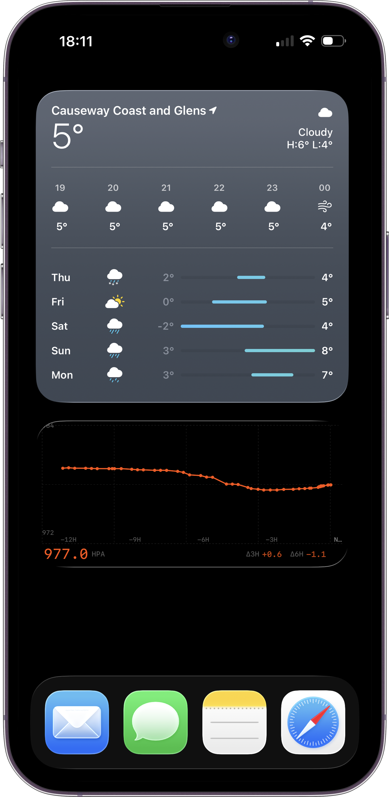
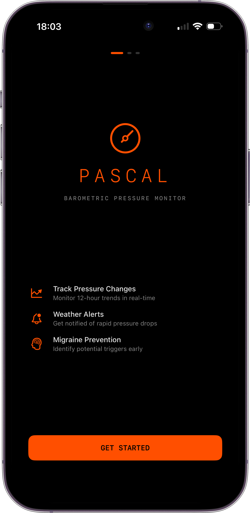

PASCAL
DOWNLOAD ON APP STORE
 TREND ANALYSIS
TREND ANALYSIS

HOME WIDGET
SIMPLE SETUPPascal tracks atmospheric pressure using your device's barometer to help monitor weather changes that may trigger migraines.
The core challenge: a 6-meter elevation change (two flights of stairs) shifts pressure by ~0.7 hPa—the same magnitude as a meaningful weather change over 3 hours.
Pascal uses a hybrid calibration system to filter movement noise and surface the signal you care about.
12-HOUR TREND ANALYSIS
Real-time pressure visualization with interactive charts. Pan, zoom, and explore your atmospheric history.
HYBRID CALIBRATION
Two-layer system: movement compensation + GPS sea-level reduction. Aerospace-grade accuracy.
APPLE WATCH
Glanceable complications and full app. Data syncs from iPhone for optimal accuracy.
BACKGROUND SAMPLING
Continuous monitoring without draining battery. Samples every 15-30 minutes automatically.
HOME SCREEN WIDGETS
Multiple sizes for iPhone. Current pressure, trend arrows, and mini charts at a glance.
MOVEMENT FILTER
Intelligent rate-of-change detection separates weather signals from human activity.
| SENSOR | Bosch BMP280 Barometer |
| RESOLUTION | ~0.18 Pa (1.5 cm altitude) |
| ACCURACY | ±1 hPa |
| PRESSURE LAPSE RATE | ~0.12 hPa / meter |
| STORM THRESHOLD | 6+ hPa / 3 hours |
| MIGRAINE THRESHOLD | ~5 hPa / 24 hours |
| CALIBRATION | Hypsometric + Relative Altitude |
| DATA RETENTION | 48 hours rolling |
LAYER 1 // MOVEMENT COMPENSATION
Uses the barometer's relative altitude tracking to detect and remove pressure changes from stairs, elevators, and floor changes. More accurate than GPS for short-term movements.
compensated = raw + (relativeAltitude × 0.12)
LAYER 2 // SEA-LEVEL REDUCTION
Uses GPS altitude to convert station pressure to sea-level pressure (QNH). Enables comparison with weather forecasts and removes absolute elevation bias.
P_sea = P_station × (1 - (L × h) / T₀)^(-g / (R × L))
Each reading shows its calibration quality:
| FULL | Both layers applied (best quality) |
| GPS | Fresh GPS altitude (< 1 hour) |
| GPS* | Recent GPS (1-6 hours) |
| REL | Movement compensation only |
| CACHE | Cached GPS (> 6 hours) |
| RAW | Uncalibrated station pressure |
RATE-OF-CHANGE FILTERING
Detects movement vs weather based on pressure change rate:
| < 0.3 hPa/min | Weather (trusted) |
| > 0.3 hPa/min | Movement (filtered) |
Elevators, stairs, and driving are automatically filtered from trend calculations.
GPS ALTITUDE SMOOTHING
Rolling median filter (7 samples) rejects GPS jitter. Sudden jumps >10m rejected unless 5+ minutes pass.
— Barometric Formula (Wikipedia)
— Zaliva & Franchetti (CMU): GPS/Barometer Sensor Fusion
— ICAO Standard Atmosphere
— Bosch BMP280 Datasheet
— Apple CMAltimeter Documentation